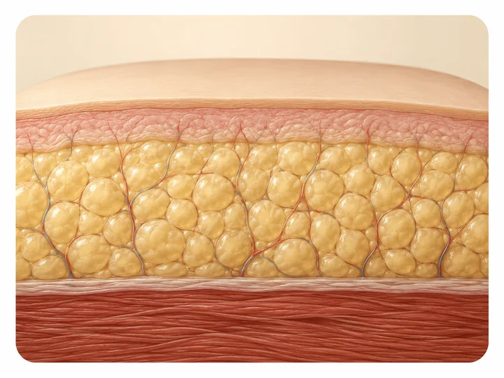

Lipedema en adolescentes: señales tempranas que no hay que ignorar
El lipedema casi nunca empieza de la nada: en la mayoría de los casos aparece justo cuando el cuerpo cambia de verdad, en la pubertad. Reconocer las señales a tiempo, en vez de atribuirlas solo al peso, le puede ahorrar a una adolescente años de dietas que no funcionan.

Muchas mamás llegan a nuestro consultorio en El Poblado con la misma historia: su hija de 13 o 14 años "subió de peso" justo después de la primera menstruación, y ese volumen se quedó pegado a las caderas y las piernas sin importar cuánta dieta o ejercicio intenten. Cuando ese patrón se acompaña de dolor al tocar la zona o moretones que aparecen sin golpe claro, suele ser una de las formas más frecuentes en que se presenta el lipedema en adolescentes, un cuadro que vemos seguido en nuestro consultorio de Medellín.
Por qué el lipedema suele aparecer justo en la pubertad
El lipedema casi nunca llega de un día para otro en la vida adulta. Según un registro de pacientes citado en revisiones médicas, más de la mitad reporta que las primeras señales aparecieron alrededor de la pubertad, con más frecuencia entre los 12 y los 14 años. Otros estudios ubican esa proporción incluso más alta en algunas muestras, aunque son cifras de registros y encuestas, no de un conteo poblacional exacto, y varían bastante de un estudio a otro.
El hilo común es el cambio hormonal. La pubertad, el embarazo y la menopausia son los tres momentos de la vida en los que con más frecuencia se dispara o se hace evidente el lipedema, y la explicación más mencionada tiene que ver con cómo responde el tejido graso a los estrógenos, aunque el mecanismo exacto todavía no está del todo claro.
Señales que no son «solo subir de peso»
La dificultad real está aquí: a los 13 años casi cualquier cambio de figura se interpreta como parte normal de crecer. Pero hay un grupo de señales que, juntas, apuntan a algo distinto:
- Una desproporción marcada entre el tronco, que se mantiene relativamente delgado, y las caderas, los muslos o los brazos.
- Dolor o sensibilidad al tocar la zona, a veces presente incluso sin haberla tocado.
- Moretones que salen con golpes mínimos, o que la adolescente ni siquiera recuerda haberse dado.
- Un volumen que no baja de forma proporcional al resto del cuerpo, aunque la alimentación mejore o se haga ejercicio con constancia.
- Una distribución simétrica en ambas piernas, que en muchos casos respeta los pies.
En muchos casos, el volumen extra aparece casi al mismo tiempo que la primera menstruación, concentrado en caderas y piernas, sin relación directa con los kilos que sube el resto del cuerpo.
Eso no es un problema de fuerza de voluntad.
Lipedema y obesidad: por qué se confunden en la consulta
La grasa de la obesidad típica se acumula también en el abdomen y la parte alta del cuerpo; la del lipedema se concentra abajo de la cintura. Esa diferencia es clínica, no estética, pero muchas veces se pasa por alto cuando la primera respuesta frente a una adolescente con piernas grandes es recomendar que "coma menos y se mueva más". Hay reportes de caso que describen cómo ese diagnóstico equivocado, sostenido durante años, llevó a jóvenes a dietas cada vez más restrictivas sin ningún resultado en las piernas, con el desgaste emocional que eso implica.
El costo de esa confusión se mide en años. Un registro de pacientes reporta 39,6 años como edad promedio al buscar ayuda médica y 48,1 años al llegar el diagnóstico: casi una década de diferencia, encima de los años que ya pasaron entre la pubertad y esa primera consulta. Nada de eso tendría que repetirse si la señal se reconoce desde la adolescencia.
Diagnóstico temprano de lipedema en adolescentes: por qué importa en Medellín
Reconocer el lipedema en adolescentes a tiempo le cambia algo a esa joven que va más allá del papel con el diagnóstico escrito: le cambia la relación con su propio cuerpo, justo en los años en que esa relación todavía se está formando. Es lo que más nos importa cuando hablamos de reconocimiento temprano, aunque hoy en día todavía no exista una guía médica ampliamente adoptada y pensada específicamente para población adolescente.
En Seravena preferimos no quedarnos solo con lo que se ve a simple vista. Ante una adolescente con este patrón, la valoración incluye un eco doppler (que hacemos en el mismo consultorio de El Poblado) para descartar otras causas de hinchazón o várices antes de hablar de lipedema; es la forma más honesta de no etiquetar algo sin haberlo revisado bien. Seravena atiende de forma particular, sin trámites de EPS ni de prepagada: se agenda la cita directo.
Si quieres entender mejor cómo avanza esta condición, puedes leer Etapas del lipedema: cómo evoluciona con el tiempo, y si ya sospechas que las señales coinciden con las de tu hija o las tuyas, el artículo Cómo saber si tengo lipedema: señales y test rápido trae un repaso más detallado para hacer en casa antes de la cita.
Qué puede hacer la familia mientras espera la cita
Mientras se agenda la cita, hay cosas que sí ayudan y no requieren ninguna indicación médica personalizada:
- Anotar en qué momentos duele más al tacto, y si eso cambia con el calor (algo frecuente en los días de más sol) o con el descanso.
- Registrar cuándo aparecen moretones nuevos, aunque no se recuerde el golpe.
- Evitar que la conversación en casa gire solo alrededor de la báscula; eso no resuelve nada y sí puede dañar la relación de la adolescente con la comida.
- Llevar esas notas, junto con fotos si las hay, a una consulta con un médico especialista en vascular o en lipedema, idealmente antes de empezar cualquier dieta restrictiva por cuenta propia.
Hay que ser honestos en un punto: ninguna de estas medidas confirma ni descarta el lipedema por sí sola, y nosotros tampoco podemos dar ese diagnóstico por fotos o por un mensaje de WhatsApp. Para eso existe la valoración en persona, que en nuestro caso incluye el Diagnóstico de lipedema: cómo lo confirma el médico paso a paso.
Si lo que buscas es información más amplia sobre el manejo de esta condición, la página de tratamiento de lipedema en Medellín explica en qué consiste el acompañamiento que ofrecemos, sin prometer una cura ni un resultado igual para cada paciente.
Si reconoces dos o tres de estas señales en tu hija, o en ti misma si eras adolescente cuando empezaron, el primer paso no es una dieta nueva esta semana: es escribir, durante los próximos siete días, en qué momentos duele al tacto, si salen moretones y si el volumen cambia al elevar las piernas o descansar. Esa lista, por escrito, hace que la primera cita avance mucho más rápido. Puedes agendar esa valoración cuando la tengas lista.
Preguntas frecuentes
¿A qué edad puede empezar el lipedema?
El lipedema suele comenzar en la pubertad, muchas veces entre los 12 y los 14 años, aunque también puede aparecer más adelante, en el embarazo o la menopausia, por los cambios hormonales de cada etapa.
¿Es lo mismo que subir de peso en la adolescencia?
No. Subir de peso en la adolescencia suele distribuirse por todo el cuerpo y responde, al menos en parte, a cambios en la alimentación o el ejercicio. El lipedema se concentra en caderas, piernas o brazos, duele al tacto, se acompaña de moretones fáciles y no baja aunque la dieta y el ejercicio sean adecuados.
¿Hace falta operarse si empieza en la adolescencia?
No necesariamente. En las primeras etapas, el manejo suele enfocarse en compresión, actividad física adecuada y seguimiento médico; la cirugía, cuando se considera, es una decisión posterior y personalizada, nunca el primer paso en una adolescente.
¿Cómo se diferencia el lipedema de la obesidad en una consulta médica?
Un médico revisa cómo se distribuye el volumen (más en piernas y caderas que en el tronco), si hay dolor al tacto, si los pies están respetados y si el volumen responde o no a la dieta y el ejercicio; en Seravena esa valoración se complementa con un eco doppler para descartar otras causas.